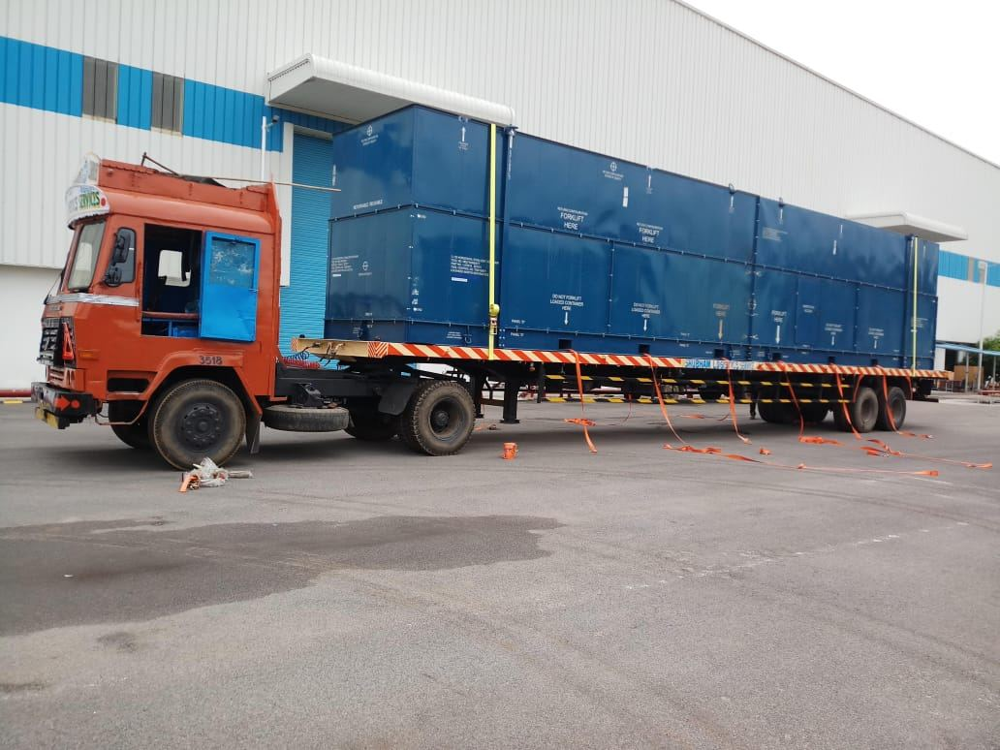
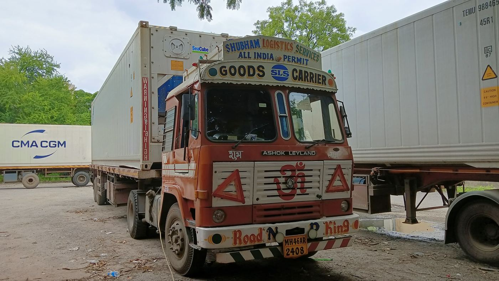

White glove delivery services for fragile, high-value and specialised cargo requiring careful handling and controlled transportation. Shubham Logistics provides specialised road transportation for commercial and industrial shipments across India.

White glove delivery is a specialised transportation service for cargo that requires more careful handling than standard freight movement. It is suitable for fragile, sensitive, high-value and specialised cargo where handling and delivery conditions are important.
Shubham Logistics supports commercial and industrial shipments with planned pickup, transportation and delivery based on the cargo characteristics, route and destination requirements.

White glove delivery is suitable for cargo where careful handling, controlled movement and delivery coordination are important to the shipment.
Sensitive and fragile equipment that requires careful loading, transportation and unloading.
Precision equipment and specialised components that require controlled movement during road transportation.
Machinery and industrial equipment requiring specialised transportation and coordinated delivery.
High-value commercial shipments where secure and careful transportation is an important consideration.
Specialised components and commercial cargo requiring attention to handling and delivery requirements.
Commercial shipments where standard transportation may not provide the level of handling required.
White glove transportation focuses on reducing unnecessary handling and planning the movement around the cargo's characteristics, route and delivery requirements.
Cargo type, dimensions, weight and handling requirements are reviewed before transportation is planned.
Pickup, delivery and route conditions are considered when arranging the transportation movement.
The shipment is transported according to its cargo characteristics and specialised handling requirements.
Delivery requirements are coordinated with the destination and receiving team where required.
Industrial equipment and machinery can require specialised transportation when the cargo is fragile, high-value, sensitive or difficult to handle. Shubham Logistics can coordinate transportation based on the cargo dimensions, weight, pickup location, delivery location and handling requirements.
This service can support movement between ports, CFSs, ICDs, factories, warehouses and project locations, subject to route and site requirements.
Inside delivery requirements can be discussed when planning a white glove shipment. The delivery arrangement depends on the cargo, access conditions, destination and handling requirements.
Delivery planning for offices, commercial facilities and other business destinations.
Coordinated delivery to warehouses based on access, unloading and receiving requirements.
Transportation support for industrial facilities and manufacturing locations.
Shubham Logistics supports specialised cargo movement between major commercial and industrial locations across India. The final transportation arrangement depends on cargo requirements, route conditions and destination access.
White glove delivery does not have a fixed price because the transportation requirement varies by shipment. The quote is determined after reviewing the cargo, route and delivery requirements.
Share the shipment details with Shubham Logistics for a transportation assessment and quote.
Share your cargo and route details with Shubham Logistics to plan the transportation arrangement, receive a quote and schedule your shipment.
Provide the cargo type, quantity, weight, dimensions, pickup location, destination and required date.
We review the cargo, route, handling requirements and destination conditions to plan the suitable arrangement.
Get a transportation quote based on the cargo, route and required white glove delivery service.
Confirm the shipment and Shubham coordinates pickup, transportation and delivery.
Shubham Logistics provides GPS-enabled transportation and movement visibility for specialised cargo shipments. Tracking support helps operations teams monitor the transportation movement and coordinate delivery updates.
Tracking availability and updates can depend on the transportation arrangement and shipment requirements.
GPS-enabled transportation supports movement visibility during the shipment journey.
Transportation movement can be monitored to support operational coordination.
Shipment updates help coordinate transportation and delivery requirements with the customer.
Shubham Logistics combines long-standing logistics experience, specialised cargo transportation and pan-India operational coverage for commercial shipments.
More than three decades of experience in transportation and logistics operations.
A fleet supporting commercial, industrial and specialised transportation requirements.
Transportation support across major industrial and commercial routes in India.
Experience in moving sensitive, fragile, high-value and specialised commercial cargo.
Connectivity between ports, CFSs, ICDs, factories and other industrial destinations.
GPS-enabled transportation supports shipment movement visibility and operational coordination.
Find answers to common questions about white glove delivery, cargo suitability, pricing, booking, delivery locations and shipment tracking.
Have fragile, high-value or specialised cargo that requires careful transportation? Share your cargo and route details with Shubham Logistics to discuss the right white glove delivery arrangement.